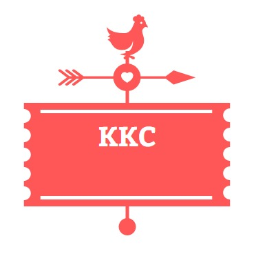

|  |
|
||||
| Promotion | Menu | Member Profile | Contact Us | ||

How do I order KKC by KKC Delivery online?
Just follow these simple steps:
- Click on Order Now.
- Select Delivery.
- Enter your delivery address to Check Delivery Area.
- Select items from the Delivery Menu.
- Checkout, pay and we'll deliver!
Alternatively you can also call our KKC Delivery Hotline at 1300-222-888 from 10.00am - 10.30pm to place your order.
Can I make changes or cancel my order after placing an order?
You may change or cancel your order via our delivery hotline 1300-222-888, provided that the ordered items have not left the restaurant.
How will I know if KKC has received my online order?
An order confirmation email will be sent to your registered email address once your order has been submitted.
(If you can't find the email in your inbox, please check your 'Spam/Junk' folder or call our delivery hotline at 1300-222-888 if you require further assistance)
What do I do if my order arrived with missing items?
Please call our delivery hotline at 1300-222-888 to inform our customer service personnels of your missing items. We will arrange for the items to be delivered to you in the soonest time possible.
Is there an 'express order' feature for KKC Delivery online?
As a registered user, login to your account and you will be able to access your order history and add your previous orders to cart with a single click.
Is KKC Delivery available across Malaysia?
KKC Delivery currently only covers selected areas in the country. You will be prompted to check your address when you start ordering online.
Or, you can call our delivery hotline at 1300-222-888 to find out if we deliver in your area.
When is the operating hours for KKC Delivery?
KKC Delivery is available from 10.00am to 10.30pm from Mondays to Sundays including public holidays. However, delivery hours may vary depending on stores.
Please call our delivery hotline at 1300-222-888 if you have further enquiries.
How much time does it take for KKC Delivery to arrive after placing an order?
We strive to deliver our service as fast as we can to meet your needs. The delivery time may vary depending on the status of delivery stores. An estimated time of delivery will be shown in every order you place online.
Does KKC Delivery offer the same menu as KKC restaurants?
Menu options for KKC Delivery vary from restaurants' in-store menu. KKC Delivery has its own Delivery Menu and promotions that are specially catered for delivery.
Is there a minimum order requirement for KKC Delivery?
A minimum order of RM15 excluding delivery charges applies to all orders on KKC Delivery.
What are the payment options available for KKC Delivery?
The following payment options are available for KKC Delivery:
- Cash (only for orders below RM300)
- Credit Card (Visa & MasterCard)
- Debit Card (Visa & MasterCard)
Please note that we only accept Credit/Debit Card issued by banks in Malaysia.
Can I schedule my order in advance?
You can place your future orders up to 3 days in advance via KKC Delivery Online. During the ordering process, select 'Advance Order' and choose your preferred delivery date and time.
To place orders beyond 3 days ahead, please call our delivery hotline at 1300-222-888 (from 10.00am to 10.30pm.)
Can I order KKC Delivery via the website without creating an account?
Yes, we now have a 'guest checkout' feature for customers who wish to place an order without creating an account.
However, we would recommend you to register with us for ease of all future orders. As a registered user, your details are saved and you will be able to select past orders in a single click. Furthermore, registration is free!